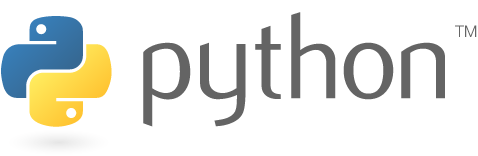
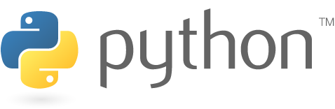

1. HTML
Los encabezados van desde <h1> hasta <h6>
2. Python
Es un lenguaje de alto nivel interpretado
Enlaces
Enlace con Imágen

HTML (HyperText Markup Language) es un lenguaje de codificación que se utiliza para crear y estructurar páginas web. Es el componente básico de la web y se considera un lenguaje estándar.
Python es un lenguaje de programación de alto nivel, interpretado y de código abierto, conocido por su sintaxis clara y legible, que se asemeja al lenguaje natural, lo que facilita su aprendizaje y uso.
Los encabezados van desde <h1> hasta <h6>
Es un lenguaje de alto nivel interpretado
